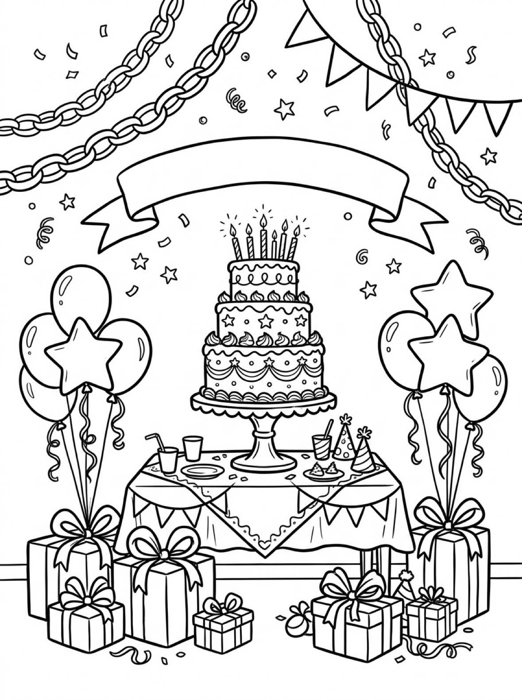
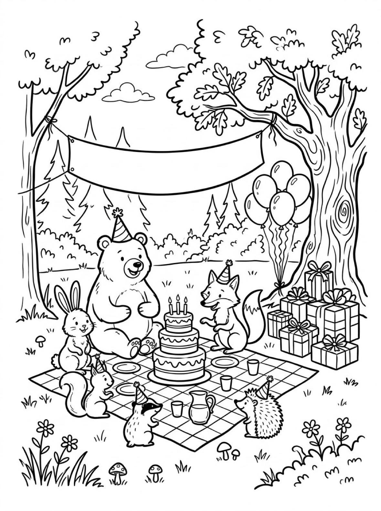
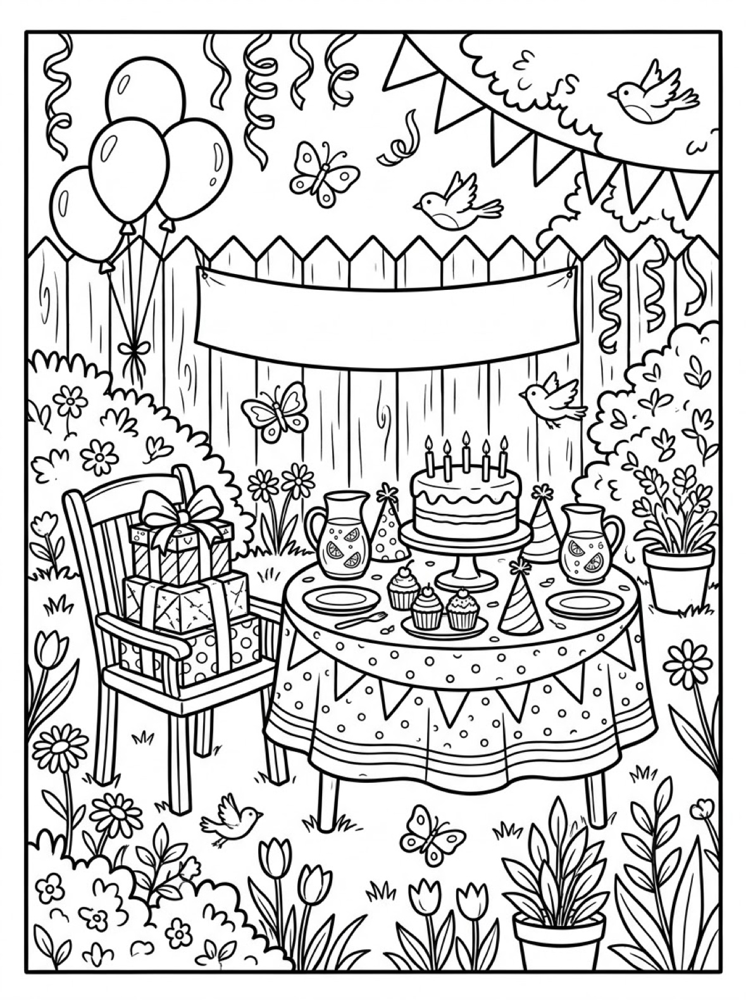

Free Happy Birthday Coloring Pages Party Table, Woodland Picnic & Garden Party Printables
These free happy birthday coloring pages give your child three parties to color — a big indoor party table with a three-tier cake, a woodland picnic where the animals wear the party hats, and a sunny garden party. Download the set below, print at home on letter-size paper, and let the coloring fun begin. No signup needed.
Last updated: October 21, 2026
Quick Answer
Yes — this page has three free printable happy birthday coloring pages: an indoor party table with a tall three-tier cake, a woodland animal picnic, and a garden party with cupcakes and lemonade. Every design includes a blank banner your child can personalize with a name or age. Bold outlines and big spaces, made for little hands. Download, print on letter-size paper, and hand over the crayons — no signup, no cost.
At a Glance
- Ages: 3–8
- Pages: 3 free printables
- Format: Print at home, letter size
- Cost: Free, no signup
- Supplies: Crayons or markers
- Time: 10–20 minutes
🎂 Birthday Party Table Coloring Page

🎨 Download Your Free Party Table Coloring Page
A three-tier cake with six lit candles on a party table, balloons and gifts all around, and a blank banner waiting for a name — bold outlines, big spaces, zero signup.
⬇️ Download Free Party Table Page 🖨️ Print Party Table Page🎁 Free printable for preschoolers & kids
🎂 Woodland Animal Picnic Coloring Page

🎨 Download Your Free Woodland Picnic Coloring Page
A bear, fox, bunny, squirrel, raccoon and hedgehog in party hats, gathered around a picnic cake under the trees — bold outlines, big spaces, zero signup.
⬇️ Download Free Woodland Picnic Page 🖨️ Print Woodland Picnic Page🎁 Free printable for preschoolers & kids
🎂 Garden Party Coloring Page

🎨 Download Your Free Garden Party Coloring Page
A garden table with a five-candle cake, cupcakes and lemonade, gifts stacked on a chair and a blank banner on the fence — bold outlines, big spaces, zero signup.
⬇️ Download Free Garden Party Page 🖨️ Print Garden Party Page🎁 Free printable for preschoolers & kids
More Coloring Pages
Tap any picture to open its theme page and download the free printable.


🎂 How To Use This Page
- Browse the three designs and pick the party your child will love most.
- Tap download or print under that design — the file opens full-size, ready for letter-size paper.
- Personalize the banner — every banner is blank on purpose, so write the birthday child's name or new age on it with a marker.
- Color together with crayons or markers and display the favorites — or save the finished page as a homemade card.
🎂 Why Kids Love Happy Birthday Coloring Pages
A birthday is the biggest day of a child's year, and coloring the party is a way to start celebrating early. In the busy days before a party, birthday coloring pages keep an excited birthday kid happily occupied, decorate the fridge door, and give early-arriving guests something to do before the cake comes out. These three scenes cover the classic party dreams: the tall cake, the animal guests, and the garden table.
Each scene is also a little world to invent. Who is the garden party for? What did the bear wish for? Kids decide the cake flavor by its colors, give every balloon a different shade, and — best of all — write a real name on the banner, so the finished page becomes a card or a party sign made for someone they love. Print the same design twice and it never comes out the same.
🎈 Meet the Three Parties on This Page
The party table. A three-tier cake stands tall on its stand, topped with six lit candles and decorated with stars and swirls of frosting. Round and star-shaped balloons bunch on either side, each bunch tied with a big bow to a wrapped present, with more gifts waiting on the floor. Paper chains loop overhead, confetti floats in the air, party hats sit ready on the table — and across the top hangs a wide ribbon banner, left completely blank for a name or age.
The woodland picnic. In a forest clearing, six animal friends have gathered on a checkered picnic blanket: a bear, a fox, a bunny, a squirrel, a raccoon and a hedgehog, most of them wearing party hats. Their three-tier cake has three candles, a pitcher and cups are set out, balloons bob against the big oak tree, and a pile of presents leans on its trunk. Overhead, a blank banner is strung between two trees — ready for the guest of honor's name.
The garden party. A round table with a polka-dot cloth and bunting trim holds a cake with five candles, three cupcakes, party hats and two pitchers of lemonade with lemon slices floating inside. Wrapped gifts are stacked high on a garden chair, balloons rise beside them, birds and butterflies cross the sky, and tulips line the picket fence — where one more blank banner waits for a name.
✏️ Birthday Coloring Tips
- Write the name on the banner. Use a thick marker so the letters stand out. For younger kids, write the name lightly in pencil first and let them trace over it — the banner becomes their first party decoration.
- Count the candles as you color. Six candles on the party-table cake, three at the woodland picnic and five in the garden — a built-in counting game, and a fun check: can your child find all of them?
- Give every balloon its own color. Or try a pattern — red, blue, red, blue — and let your child decide which balloon breaks the pattern.
- Turn the finished page into a card. Write the message on the back, fold it into an envelope, and the birthday kid gets a card no shop sells.
🎂 Coloring Pages for Different Ages
For ages 3 to 4, start with the party table. The cake is one big, bold shape, the balloons are large round spaces, and there is no wrong way to color a present. Scribbling is fine at this age — and a grown-up can write the name on the banner while little hands do the coloring.
For ages 5 to 6, the woodland picnic is the sweet spot. The animals are big, friendly shapes with real choices to make — what color is a birthday bear? — and the checkered blanket is a satisfying pattern to fill in square by square, or to leave white and call it finished.
For ages 7 to 8, hand over the garden party. It carries the most detail — tulips, fence pickets, polka dots on the tablecloth, tiny cupcakes and lemon slices in the pitchers — and rewards careful coloring and patience. Older kids often spend the longest on this one, and it makes the best personalized party sign of the three.
🎈 More Birthday Fun After Coloring
After coloring, put the finished page to work. A colored party-table page makes an instant birthday card — just write the message on the back — and the woodland scene becomes a party sign as soon as the banner carries the birthday child's name. At the party itself, print extra copies and set them out with crayons as a coloring station, or slip finished pages under the plates as placemats.
If the bunny and hedgehog stole the show, hop over to the bunny coloring pages for three more bunny scenes — a carrot basket in the garden, a bunny family at home in their burrow, and a bunny reaching for an apple. And when the next big celebration on the calendar rolls around, the Santa coloring pages are waiting, with a toy workshop, a snowy rooftop and one very long list.
🔗 More Free Printables You’ll Love
- Free Santa Coloring Pages Santa painting toys in his workshop, crossing a snowy rooftop, and reading his list by the fire.
- Free Winter Coloring Pages A snowman in the forest, kids sledding to a log cabin, and a skater on a frozen pond.
- Free Bunny Coloring Pages A bunny with a carrot basket, a bunny family at their burrow, and a bunny reaching for an apple.
- All Free Coloring Pages Browse every free coloring page on the site, organized by theme.
❓ Happy Birthday Coloring Pages FAQ
Are these happy birthday coloring pages really free?
Yes — all three designs on this page are free original printables from MomYouNeedThis. Download them, print them at home, and color — no signup and no cost.
What ages are these coloring pages best for?
Kids ages 3 to 8 get the most from this set. Younger children can start with the big party-table cake and the large balloons, while older kids enjoy the extra detail in the garden party scene — tulips, fence pickets and tiny cupcakes.
How do I print a coloring page?
Tap the download button under the design you want, then print the file on regular letter-size paper. The print button opens the full-size page in a new tab if you prefer to print from there.
Why are the banners blank?
On purpose. Every banner on these pages is left empty so your child can write the birthday kid's name — or the age they are turning — right on the banner before or after coloring. Print one as a personalized party sign or card front.
Can I use these pages at a birthday party?
Yes — print a stack and set them out with crayons as a party activity, or use finished pages as placemats and decorations. The woodland picnic design is a favorite for animal-themed parties.